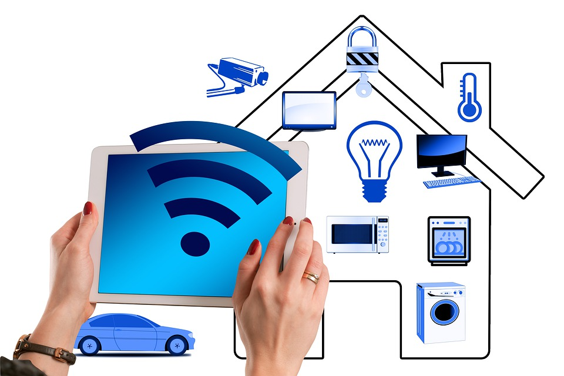
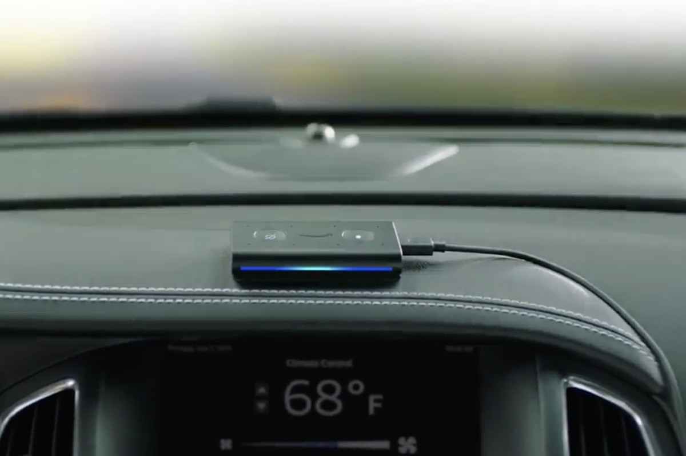

I am very interested in how connected devices can automate processess commonly done in the home. This has important implications as it can simplify the lives of many people including ones that may be disabled.
The use of connected devices in cars can have an overwhelmingly positive effect on such things as safety and comfort. For example, Amazon has recently come out with a new device called the Echo Auto. It pairs with your cell phone and has the ability to give directions, play music from spotify, etc...
It is a handsfree way to control media in your car without being distracted
